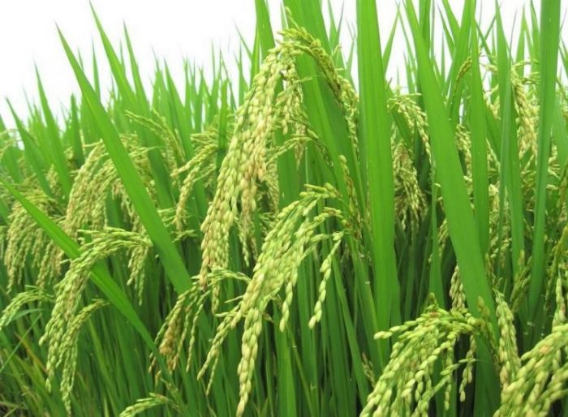
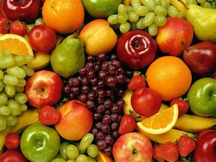
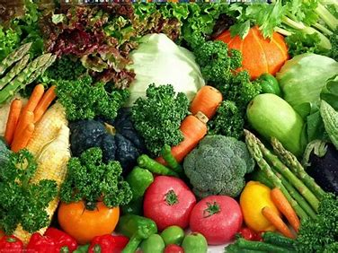
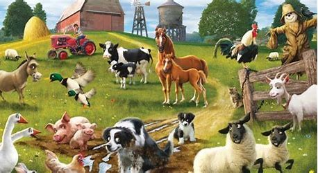

Kami adalalah salah satu website yang di dirikan untuk membantu kalian dengan memberikan informasi seputar ilmu pertanian.
Temukan tips dan panduan berguna untuk meningkatkan hasil pertanian Anda dan praktik pertanian yang berkelanjutan.
1. Pilih Lokasi Yang TepatPastikan lokasi pertanian anda sesuai dengan jenis tanaman yang dibudidayakan. Pertimbangkan faktor seperti iklim, tanah, dan akses air.
2. Pemilihan Tanaman Yang TepatPilih tanaman yang sesuai dengan iklim dan kondisi tanah di daerah anda. Juga, pertimbangkan permintaan pasar untuk tanaman tertentu.
3. Pemeliharaan TanahRawat tanah anda dengan baik. Ini termasuk uji tanah secara teratur, penggunaan pupuk yang sesuai, dan praktik-praktik penanaman berkelanjutan.
4. Pengairan Yang BaikPastikan tanaman anda mendapatkan air yang cukup, tetapi jangan terlalu banyak. Sistem pengairan yang efisien seperti tetes air dapat membantu menghemat air.
5. Pengendalian hama dan penyakitBelajarlah tentang hama dan penyakit yang mungkin memengaruhi tanaman Anda dan terapkan metode pengendalian yang sesuai seperti pestisida organik atau metode pengendalian hama alami.
6. Manajemen WaktuBuat jadwal yang efisien untuk tugas-tugas pertanian Anda. Ini termasuk waktu tanam, pemeliharaan, dan panen.
7. Pemilihan Alat Yang TepatPastikan Anda memiliki alat pertanian yang sesuai dan dalam kondisi baik. Alat yang baik dapat meningkatkan produktivitas dan mengurangi pekerjaan yang berat.
8. Konservasi TanahTerapkan praktik-praktik konservasi tanah seperti pemupukan hijau, pencegahan erosi, dan rotasi tanaman untuk menjaga kesehatan tanah.
9. Pelatihan dan PendidikanTerus belajar dan berkembang sebagai petani. Terlibat dalam pelatihan dan program pendidikan pertanian untuk meningkatkan pengetahuan Anda.
10. Pasar dan PemasaranPertimbangkan pasar potensial untuk produk Anda sebelum mulai menanam atau beternak. Pastikan Anda memiliki rencana pemasaran yang baik.
Produk-produk pertanian adalah hasil dari kegiatan pertanian yang mencakup berbagai jenis tanaman, hewan, dan produk-produk yang berasal dari sektor pertanian. Berikut beberapa contoh produk-produk pertanian:
Tanaman Pangan
Buah-buahan
Sayuran
Hewan
| Tahun | Nama Tanaman | Harga per Kilogram (IDR) |
|---|---|---|
| 2021 | Padi | 3000 |
| 2021 | Jagung | 2500 |
| 2021 | Gandum | 4000 |
| 2022 | Padi | 3200 |
| 2022 | Jagung | 2700 |
| 2022 | Gandum | 4100 |
| 2023 | Padi | 3400 |
| 2023 | Jagung | 2800 |
| 2023 | Gandum | 4300 |